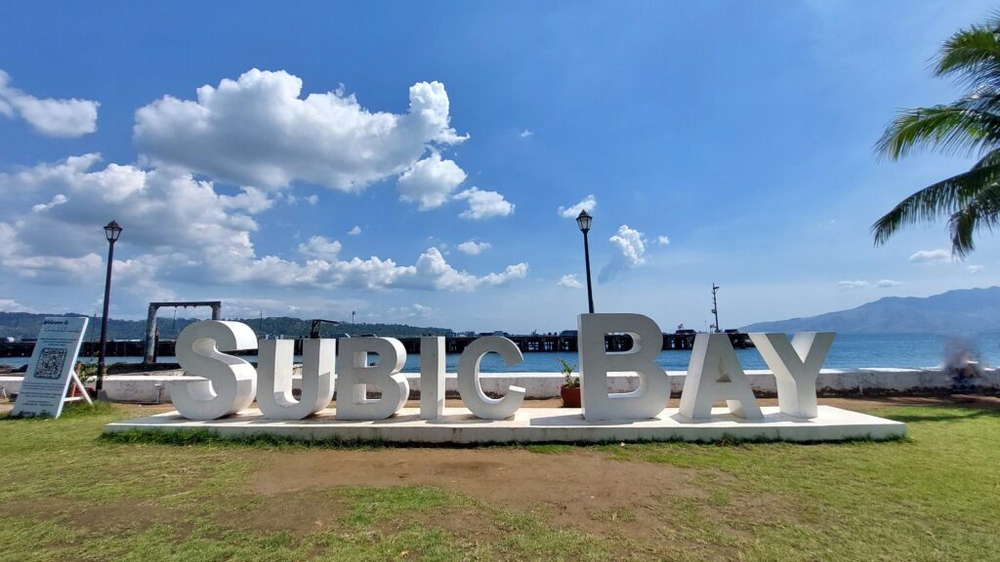
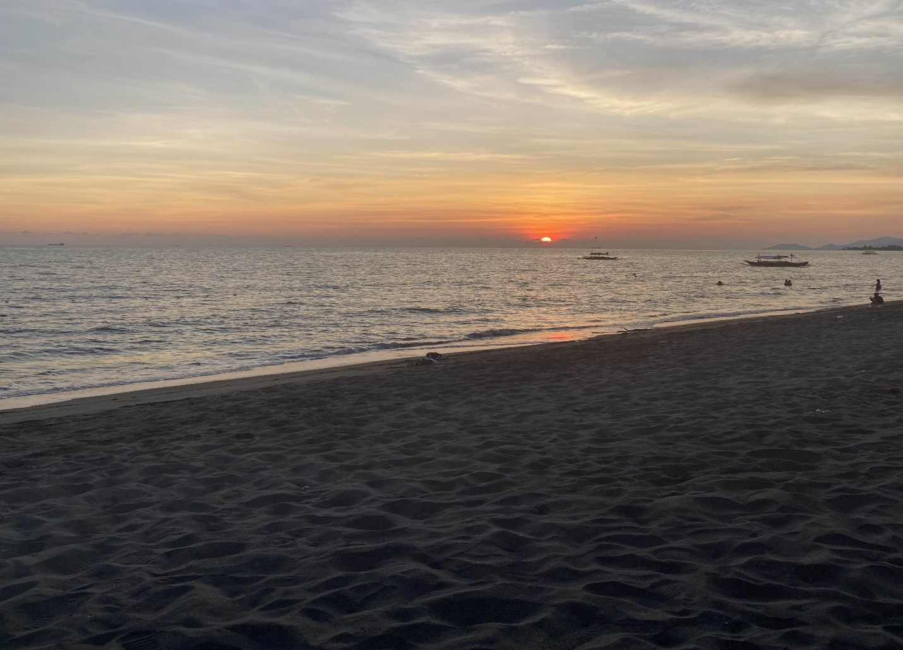

Where the Ocean Meets Memory
by Manalo, Kisha | July 24, 2025
The Philippines is well known for its tropical climate, with scorching hot weather and occasional rainy seasons. During the long summer heat, people often think about going to the beach in search of a destination to relax and have fun. Unsurprisingly, Subic has always been a popular choice. Located along the coastline, Subic offers easy access to beach resorts, stunning views, and various sea-based activities that attract tourists from all over the country. With its clean, sandy shores scattered with tiny seashells and numerous diving spots teeming with marine life, Subic has become a beloved vacation destination.
But to me, Subic was more than just a vacation spot. It was my childhood homeland, filled with memories of joy, laughter, and, most importantly, family.
As a kid, my family and I would often visit Subic because my mother’s side of the family lived there. Since we lived with my father’s side, every trip to Subic felt more like a vacation than a typical family visit. Each trip was an opportunity to reconnect and explore, and we tried everything that Subic and its nearby Zambales had to offer. We visited malls like Harbor Point and SM Subic, stayed at various beach resorts to relax and soak up the sun, and sang our hearts out at the numerous karaoke booths in the area.

One of my favorite moments, something I always looked forward to whenever we visited, was what we did just before heading back home to Angeles. Once night fell and the cold air began to seep in with the ocean breeze, my aunt would always suggest stopping by a cozy café to grab some snacks and drinks. Then, we’d head over to a lighthouse near a park, where we’d sit down to talk and reminisce about anything and everything. Those were always the most memorable times, when I caught up with my cousins, shared stories, and soaked in the peaceful moments before the trip came to an end.

To me, Subic feels like comfort. It's the ocean breeze, the cool night air, and the quiet walks with family and friends. This place holds a deep sense of nostalgia, reminding me of the carefree days and cherished memories I hold so dearly in my heart. And as I think of the tourists who visit Subic, I hope they create beautiful memories of their own. I hope they feel the same warmth and relaxation that I felt each time I visit. After all, isn’t that what a vacation should be? A sense of peace, comfort, and escape.
In the end, Subic offers more than just beautiful oceans and scenic views. It’s the clean beaches, the kind and respectful people, the well-practiced road etiquette, and the wide variety of stores and restaurants to explore. As people, we seek new experiences in life, which is why we go on vacations. The places we visit become part of our stories, shaping the memories we cherish for years to come. That’s why I hope visiting Subic gives you the same sense of belonging and joy I once felt. I hope it becomes a place where you can relax, reconnect, and create unforgettable moments with the people who matter most.
Back to top